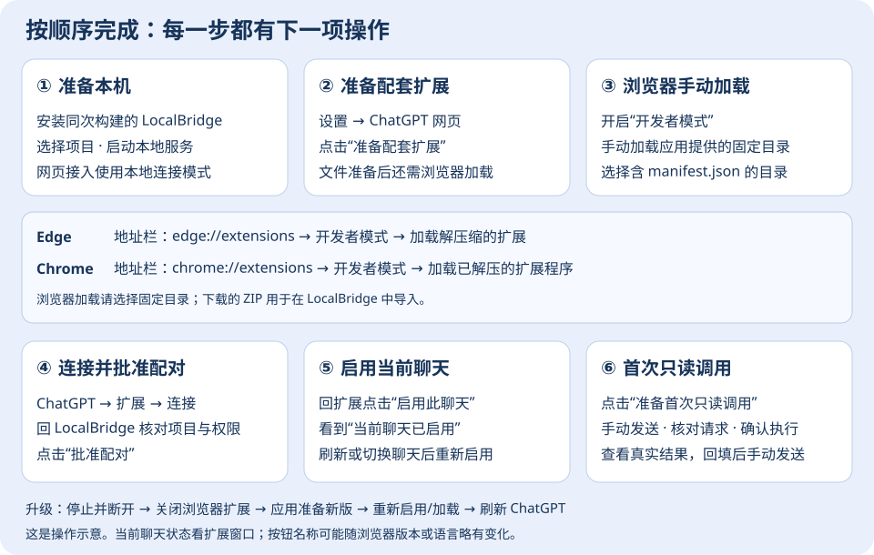

安装包已携带配套扩展。首次安装在 LocalBridge 点击“准备配套扩展”，无需去 GitHub 找 ZIP，也无需填写 API Key、Tunnel ID 或安装 Codex 桌面程序。

设置 → ChatGPT 网页 → 开始设置，选择 Edge 或 Chrome，点击 准备配套扩展（推荐）。看到文件准备完成后继续；这时浏览器尚需手动加载。manifest.json；不要选择下载的 ZIP、下载目录或其上一级文件夹。| 浏览器 | 地址栏输入 | 加载按钮 |
|---|---|---|
| Microsoft Edge | edge://extensions | 加载解压缩的扩展 |
| Google Chrome | chrome://extensions | 加载已解压的扩展程序 |
按钮名称可能随浏览器版本或语言略有变化；选择手动加载解压目录的按钮。
https://chatgpt.com 并登录。点击浏览器工具栏“扩展”，找到 LocalBridge 并固定；点击 LocalBridge →“连接这台电脑”。回到 LocalBridge → 设置 → ChatGPT 网页，核对请求中的项目文件夹与权限，再点击“批准配对”。workspace_context 及其参数，点击“确认执行以上请求”。看到实际结果与“已完成真实调用”后，点击“填入结果”，检查内容并手动发送。文件已准备、浏览器已连接、配对已批准、当前聊天已启用、工具实际成功是不同阶段。当前聊天的状态以扩展窗口为准，应用里的数量是本机总计。
本项目发行源为 MYD548-svg/LocalBridge-Community Releases。下载 LocalBridge-ChatGPT-Web-v<版本>.zip 并在应用导入。不要下载 Source code ZIP；Actions 候选附件解压后再选择里面真正的扩展 ZIP。
本版本尚未正式发布、附件缺失或与当前应用不匹配时，应用会说明原因。使用内置包即可首次准备；不要用其他项目的扩展替代。
固定目录 %LOCALAPPDATA%\LocalBridge\browser-extension\current 请保留。导入成功后，下载的 ZIP 可以不再保留。应用保留更新备份。
工具在本机执行；你确认回填并发送的内容会进入在线聊天。